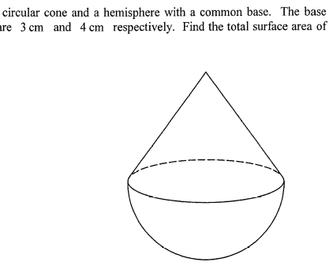

The dashed arc shows the hidden rear half of the common circular base.

Question. A solid is formed by placing a right circular cone of base radius \(5\ \text{cm}\) and height \(12\ \text{cm}\) on a hemisphere of radius \(5\ \text{cm}\), with the circular base glued. Find the total surface area of the solid.